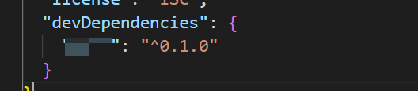
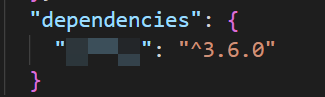
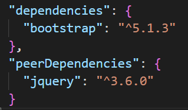

日常的学习笔记，包括 ES6、Promise、Node.js、Webpack、http 原理、Vue全家桶，后续可能还会继续更新 Typescript、Vue3 和 常见的面试题 等等。
npm的介绍与使用
官方网站 https://www.npmjs.com/
npm 全称 node package manager ，是 nodejs 的包管理器 ，用于 node 插件管理，包括安装、卸载、管理依赖等。
常用命令与配置
这里我们只总结一些平时工作中会经常用到的 命令 和 配置。
npm init
默认安装一个 package.json 的文件，直接使用 npm init -y 进行安装。
1 | { |
我们来介绍几个重要字段。
- name ：当前包的 名字 ，也就是最终发布到 npm官网 上包的名字，不能和已有的包重名。
- version: 当前包的 版本号 。
- main：当前包的 入口文件 ，也就是使用
require默认引入的文件。 - scripts：可以配置一些 执行脚本 ，如 测试脚本 等。
- license：协议许可。
npm install
npm install 安装指定的包，简写为 npm i。 后面可以添加 依赖关系。
安装方式分为 全局安装 和 本地安装。
全局安装
1
2# 安装一个全局 http 服务。
npm install http-server -g全局安装 的意思很简单，就是安装的模块会被安装到全局下。
可以在命令行中直接使用安装的包，其实只是在
/user/local/bin目录下做了个 链接 连接到/usr/local/lib/node_modules/http-server/bin/http-server这个文件下。当我们执行
http-server这个命令时，会调用链接 到这个文件。（mac因为有权限问题，这里我们可以加sudo来执行命令）关于此部分的使用，可以参考 我的博客 node中第三方模块。
我们可以自己来尝试写一个包，创建bin目录，新增www文件。随便起一个名字。
1
2
3// #! 表示采用node来执行此文件，同理 shell可以表示 sh
console.log('莫小尚');更新
package.json文件1
2
3"bin": {
"my-pack":"./bin/www" // 这里要注意名字和你建立的文件夹相同
},再用一个常用的命令实现链接的功能。
1
npm link
这样我们在命令行中直接输入
my-pack就可以 打印出结果。
本地安装
1
npm install webpack --save-dev
本地安装 就是在项目中使用，而非在命令行中使用。
执行上述命令，可以生成一个
package-lock.json文件。安装后的模块被安装到了
node_modules下，并且在package.json中也增加了一些内容。1
2
3"devDependencies": {
"webpack": "^4.39.3"
}我们可以通过添加后缀，指定版本号来安装包。
1
npm i jquery@2.2.0
（默认执行
npm i会安装项目中所需要的依赖，如果只想安装生产环境依赖可以增加--production参数）下面我们来介绍一下
package-lock文件。
package-lock 文件
package-lock.json 的作用是 锁定依赖安装结构 ，保证在任意机器上执行 npm install 都会得到完全相同的 node_modules ，因为package-lock.json 存储所有安装的信息。
1 | { |
（如果手动更新了 package.json文件，执行安装命令会下载对应的新版本，并且会自动更新 package-lock 文件）
scripts配置
在 package.json 中可以定义自己的脚本通过 npm run 来执行。
1 | "scripts": { |
我们可以使用 npm run hello 执行自定义脚本，也可以使用 npm run build 执行node_modules/.bin 目录下的 webpack文件。
npm run命令执行时，会把./node_modules/.bin/目录添加到执行环境的PATH变量中。因此如果某个 命令行包 未全局安装，而只安装在了当前项目的node_modules中，通过npm run一样可以执行该命令。执行 npm脚本 时要传入参数，需要在命令后加
--标明。如npm run hello -- --port 3000可以将--port参数传给hello命令。npm 提供了
pre和post两种钩子机制。可以定义某个脚本前后的执行脚本，没有定义默认会忽略。1
2
3
4
5"scripts": {
"prehello":"echo prehello",
"hello": "echo hello",
"posthello":"echo posthello"
}
（通过打印 全局 env 和 在项目下执行 npm run env来对比PATH属性，不难发现在执行 npm run 的时候确实会将 ./node_modules/.bin/ 目录添加到PATH 中）
依赖关系
依赖关系分为以下几种：
- 开发依赖
devDependencies，开发时使用的依赖，上线时就不需要了。如 webpack 、 gulp 等。 - 生产依赖
dependencies，开发时会用，上线的时候也需要。如 vue 等。 - 同等依赖
peerDependencies，安装某个库时，提示需要用到的其他依赖。如 安装bootstrap ，则需要用到依赖 jQuery 。 - 可选依赖
optionalDependencies，如果有一些依赖包即使安装失败，项目仍然能够运行或者希望npm继续运行。 - 打包依赖 (捆绑依赖)
bundledDependencies，将这个对象中的包打包到最终的发布包里，就是将节点内的包压缩到一个压缩包中。
开发中用的最多的就是 开发依赖 、 生产依赖 和 同等依赖。
开发依赖 和 生产依赖
开发依赖，开发环境所需要的依赖。同理，生产依赖，就是 生产环境所需要的依赖。
- –save：将保存配置信息到 package.json*，默认为 *dependencies 节点中。
- –save-dev：默认为 devDependencies 节点中。
在实际开发中，我们 不填写任何标识，则会默认安装到 生产环境 中。

假设我们需要安装到 开发环境 ，则填写标识 --save-dev 即可。

如果我们现在有一个 github 上克隆的开源项目，我们需要安装当前项目所需要的插件和各种依赖。
直接使用命令 npm install ，就会将上述两个节点下的依赖全部加载到 node_modules 下。
假设我们现在只需要 生产依赖 ，则在后面加上节点 production 即可。 npm install --production
同等依赖
同等依赖，就是节点 peerDependencies 。
在安装时会提示我们需要用到的 同等依赖包 有哪些，起到一个提示的作用。

版本管理
参考文献 semver | npm中文文档
npm采用了 semver规范 作为依赖版本管理方案，semver 约定一个包的版本号必须包含3个数字。
MAJOR.MINOR.PATCH 意思是 主版本号.小版本号.修订版本号 。
MAJOR对应大的版本号迭代，做了不兼容旧版的修改时要更新MAJOR版本号。MINOR对应小版本迭代，发生兼容旧版API的修改或功能更新时，更新MINOR版本号。PATCH对应修订版本号，一般针对修复 BUG 的版本号。
当我们每次发布包的时候都需要升级版本号。
1 | npm version major # 大版本号加 1，其余版本号归 0 |
如果使用 git 管理项目会自动 git tag 标注版本号。
标识含义
| range | 含义 | 例 |
|---|---|---|
^2.2.1 | 指定的 MAJOR 版本号下, 所有更新的版本 | 匹配 2.2.3, 2.3.0; 不匹配 1.0.3, 3.0.1 |
~2.2.1 | 指定 MAJOR.MINOR 版本号下，所有更新的版本 | 匹配 2.2.3, 2.2.9 ; 不匹配 2.3.0, 2.4.5 |
>=2.1 | 版本号大于或等于 2.1.0 | 匹配 2.1.2, 3.1 |
<=2.2 | 版本号小于或等于 2.2 | 匹配 1.0.0, 2.2.1, 2.2.11 |
1.0.0 - 2.0.0 | 版本号从 1.0.0 (含) 到 2.0.0 (含) | 匹配 1.0.0, 1.3.4, 2.0.0 |
预发版
- alpha (α)：预览版，或者叫 内部测试版；一般不向外部发布，会有很多bug；一般只有测试人员使用。
- beta (β)：测试版，或者叫 公开测试版；这个阶段的版本会一直加入新的功能；在alpha版之后推出。
- rc (release candidate)：最终测试版；可能成为最终产品的候选版本，如果未出现问题则可发布成为正式版本。
（2.1.0-beta.1这样声明的版本用户不会立马使用，可以用来做测试使用）
npx的用法
参考官网 npx - npm
npx 命令是 npm v5.2 之后引入的新命令，npx 可以帮我们直接执行 node_modules/.bin 文件夹下的文件。
npx 想要解决的主要问题，就是调用项目内部安装的模块。
执行脚本
1 | npx webpack |
这样执行，会直接省略配置 scripts 脚本。
避免安装全局模块
全局安装的模块会带来很多问题，如 多个用户全局安装的模块版本不同 。
1 | npx create-react-app react-project |
我们可以直接使用 npx 来执行模块。
它会先进行安装，安装后会将下载过的模块删除。这样可以保证项目是最新版本。
npm包的发布
首先我们需要先切换到官方源 nrm，这样更快。（关于 nrm 可以参考我之前的博客）
1 | npm install nrm -g |
之后将名字更新一下，这里也可以发布 作用域包 选定版本。
忽略可以使用 .npmignore，然后可以直接进行发布了。
1 | npm publish |
这样我们自定义的包就被上传到 npm官网 上啦。
本篇文章由莫小尚创作，文章中如有任何问题和纰漏，欢迎您的指正与交流。
您也可以关注我的 个人站点、博客园 和 掘金，我会在文章产出后同步上传到这些平台上。
最后感谢您的支持！